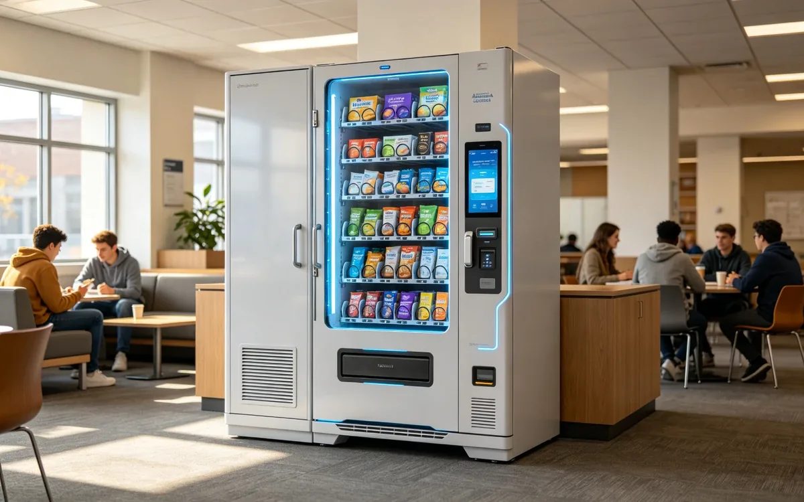

AI Vending for Universities & Colleges

The scenario
University campuses are open 24/7, and so is student demand. Dining halls cover structured meals, but they close; libraries and dorms do not. Students study late, train late, and snack late, and in the hours between meal plans the only options are a walk to an off-campus store or nothing at all. An AI vending unit placed in a dorm lobby, library, or student center gives students a fast, cashless option whenever they need it — and gives the university a self-running retail channel that captures demand the meal plan never will.
The university audience is the most cashless-native of any venue: students live on their phones, pay with cards and wallets, and expect self-service everywhere. They also generate extremely predictable volume, with traffic tied to the academic calendar — reading weeks, exam season, and move-in weekends are all visible, forecastable spikes.
Who you are serving
- Students. The core buyers. They are price-sensitive but convenience-driven, and they buy in small, frequent transactions across all hours.
- Residential students. Dorm residents are the most loyal users — a unit in the lobby becomes part of their daily routine.
- Late-night studiers. The library and 24-hour study spaces generate the highest-margin late-night demand on campus.
- Faculty and staff. Coffee, water, and snacks add reliable daytime volume, especially in staff-accessible buildings.
The pain points are the gaps around the meal plan: dining halls close, the campus store has limited hours, and a student studying at midnight does not want a 20-minute round trip for a snack. A unit answers all of these automatically.
Why AI vending fits
- Campuses are open 24/7 with genuinely round-the-clock demand — dorms, libraries, and study spaces never empty out.
- Students are the most cashless-native demographic; cards and mobile wallets are universal.
- Repeat traffic is extremely high — the same students visit the same buildings daily.
- Meal plans cover structured meals but not the gaps, so the unit complements rather than competes with dining services.
- One well-placed unit can serve hundreds of students a day, making the economics attractive even with low basket sizes.
Peak buying windows
- Between classes (10 AM–2 PM): drinks and quick snacks for students moving across campus.
- Late-afternoon study break (3–5 PM): coffee, energy, and snacks before evening study.
- Late night (10 PM–2 AM): the signature university window — library and dorm purchases during exam and assignment season.
- Weekends and events: move-in weekends, game days, and campus events create dramatic, predictable spikes.
Where to place the unit
- Dorm lobby or entrance. The highest-frequency location. Residential students pass it multiple times a day and it becomes a routine stop.
- Library or 24-hour study hall. The late-night revenue engine — demand peaks exactly when dining services are closed.
- Student center or campus hub. Central foot traffic and the natural gathering point between classes.
- Gym or recreation center. Hydration and recovery items for student athletes and casual gym-goers.
- Near the campus store or dining hall entrance. Complements existing services and benefits from established traffic patterns.
How to choose products for this venue
Students buy for convenience and for the moment — the 2 AM study session needs different products than the between-classes dash. A framework that works:
Traffic drivers (drinks and coffee)
- Bottled water, sparkling water, sodas, cold brew, and energy drinks (on campuses where allowed).
- Drinks create the daily habit and expose students to the rest of the range.
Profit drivers (snacks and study fuel)
- Granola bars, protein bars, trail mix, chips, cookies, and ramen or instant noodles — the classic late-night study staple.
- For residential dorms, quick meals like heat-and-eat options and ramen perform especially well.
- Fresh items like sandwiches and yogurt work in high-traffic student centers with refrigerated units.
Essentials (high margin)
- Phone cables, earbuds, chargers, pens, notebooks, and basic toiletries.
- The "forgot it" items — especially chargers and earbuds — deliver the highest margins and build reliance on the unit.
Adjust by location: dorms and libraries sell more late-night snacks and drinks, while the gym sells hydration and protein. Review the mix at the start of each term — student preferences shift with the semester.
How to arrange the shelves
Students decide in a glance and are drawn to eye level. The vertical logic is simple:
- Top shelves (essentials): chargers, earbuds, and toiletries — the visible, high-margin "forgot it" zone.
- Middle shelves (eye level, profit zone): protein bars, granola bars, chips, and the most popular snacks.
- Bottom shelves (staples): water bottles, sodas, and ramen — heavy or bulk items students will reach for.
Keep the most popular items front and center and always face the front row. In busy student centers, a restocker should expect to fill gaps daily.
Running the unit well
- Restock rhythm: high-traffic campus units need frequent attention — daily top-ups during term time, with deeper restocks before exam weeks and move-in weekends.
- Payments: contactless cards and mobile wallets are essential. Campus card integration is a major differentiator where the vendor supports it — it makes the unit feel like part of campus life.
- Meal-plan complement: position the unit as filling gaps, not replacing dining services. This keeps university partners on board.
- Food safety: for chilled or fresh items, use certified refrigerated units, log temperatures, and enforce date labeling.
- Seasonal planning: expect the calendar to drive everything — exam season spikes, holiday dips, and summer slowdowns. Stock accordingly.
What success looks like
University units are volume businesses: small baskets, high frequency, and dramatic calendar swings. Track:
- Transactions per day — the core metric, with dorms and libraries usually leading.
- Repeat rate — the share of students who buy multiple times a week; this is what makes campus units work.
- Late-night share — how much revenue lands after 10 PM; it should be a meaningful slice.
- Calendar responsiveness — how well the mix and stock track exam weeks and events.
- Stockout rate on top items — running out of ramen during finals week is a visible miss.
Common mistakes to avoid
- Treating every location the same. A library unit and a gym unit need completely different mixes.
- Forgetting the late-night window. The 10 PM–2 AM demand is the university’s signature opportunity; the unit must be stocked for it.
- Skipping the university partnership. Placement and product approval are political as well as practical — a pilot with data beats a pushy rollout.
- Overpricing staples. Students are price-sensitive; keep water and core snacks near retail pricing and take margin on premium and emergency items.
- Ignoring the academic calendar. Stocking for a steady state ignores the biggest sales days of the year — finals week and move-in.
Frequently asked questions
Do campus vending units compete with the meal plan?
No — they fill the gaps around it: late nights, between classes, and in buildings far from dining halls. Framing it that way keeps dining services on board.
What sells best on campus?
Drinks and coffee drive traffic; snacks, protein bars, and ramen drive volume; chargers and earbuds drive the highest margins.
How do students pay?
Contactless cards and mobile wallets. Campus card integration is a strong plus where supported.
Who approves campus placement?
Usually dining services and facilities, and sometimes student government. A one- or two-unit pilot with a data-sharing plan is the fastest path to approval.
When is demand highest?
Late night during exam and assignment season, plus move-in weekends and campus events. Stocking for these spikes is the biggest lever on revenue.